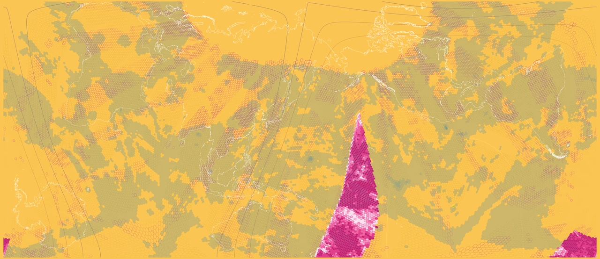
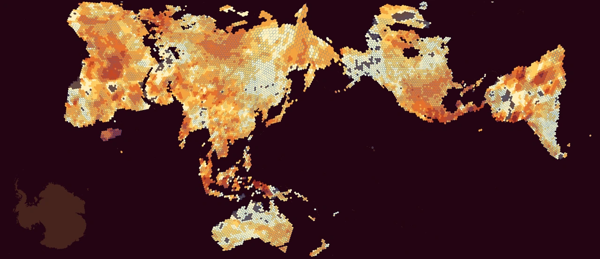
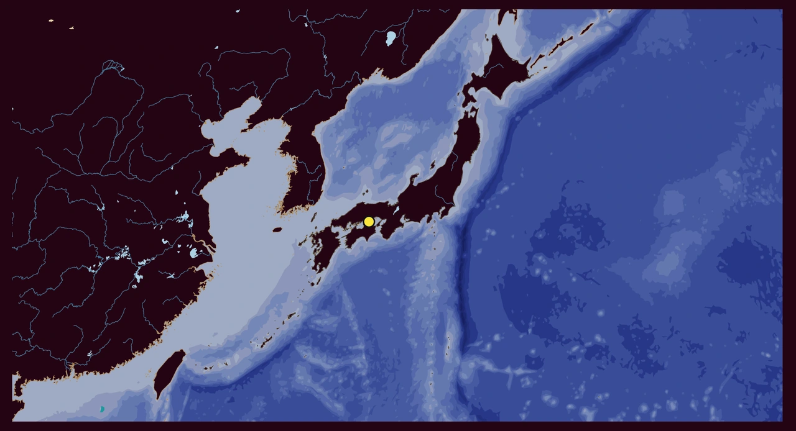
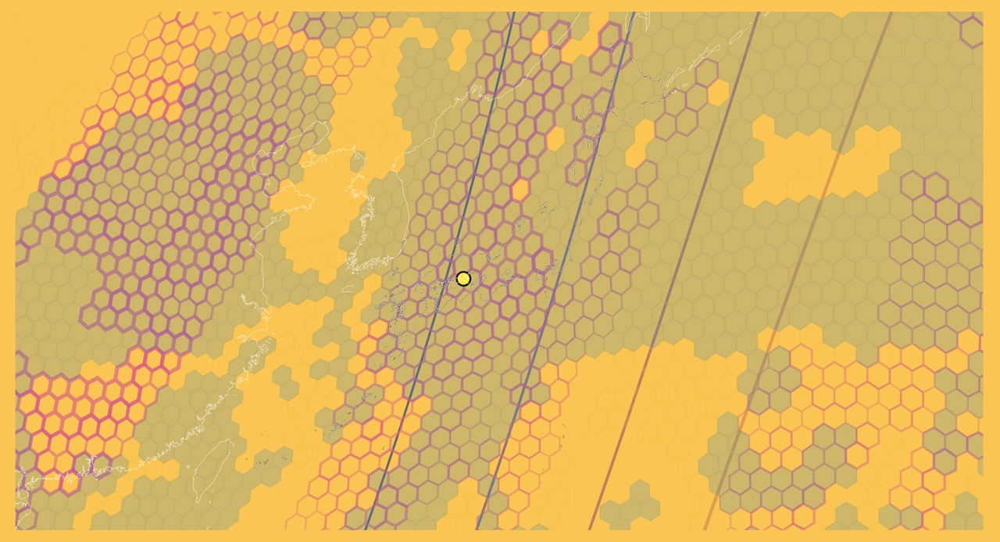
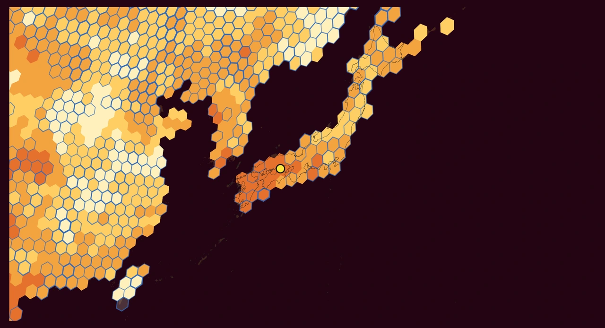
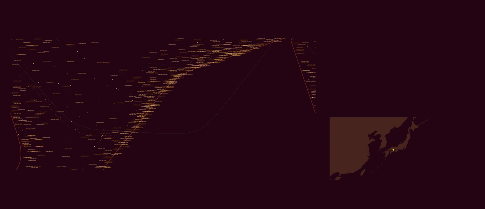

Cartofreako × Setouchi
World

Rivers, coastlines, and generalized ocean depths.
Legend & sources

Submarine and terrestrial cable routes connect continents. Routes are schematic; source snapshots span 2022–2026.
Legend & sources


Cloud, precipitation, aerosol, and radiation observations from 15–29 October 2026.
Legend & sources


Daily land-temperature record counts through 28 October 2026. A partial-year count, not a temperature anomaly.
Legend & sources

World atlas observer plate: San Francisco reference, 3 November 2026, 17:10 UTC. Starlink names and distinct vendor symbols.
Legend & sources
Japan / Setouchi


Japan and its surrounding seas, with the Setouchi reference point.
Legend & sources

Japan’s cable landings and terrestrial networks. Amber ocean routes and green land routes; schematic locations.
Legend & sources


Atmospheric observations from 15–29 October 2026. Missing daytime cloud retrievals do not mean clear sky.
Legend & sources


The same daily record-count classes around Japan, through 28 October 2026.
Legend & sources


Setouchi observer at 34.45° N, 133.99° E, 29 October 2026, 20:00 UTC. Sky field and Japan locator shown together.
Legend & sources
Cartofreako · Benjamin De Kosnik. Geographic plates use the modified Setouchi AuthaGraph layout. Observer plates retain their own sky geometry and dated reference points. Data credits accompany each legend.
Hamonshū Revisited

Repeating wave arcs.
Book review

Flowing currents and eddies.
Book review

A dotted breaking wave.
Book review
Mori Yūzan, Hamonshū (1903). Three water-pattern details, segmented for the Izzi review collection.
Two atlases, one shared table
The existing page continues here. Its current text and lists are preserved by the publisher.